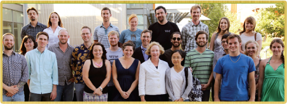
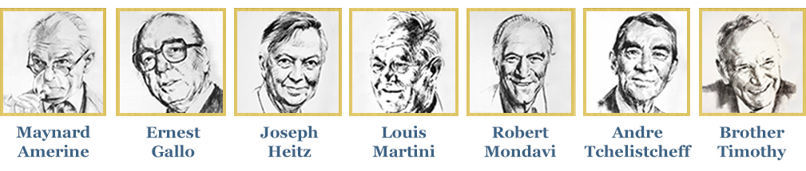

Wine Spectator
Scholarship Foundation
Education has always been a primary goal of Wine Spectator. Proceeds from the Wine Experience, now in its 35th year, support the Wine Spectator Scholarship Foundation, which provides grants and scholarships to a wide variety of wine-related and culinary programs.
To date, more than $20 million has been raised. This extraordinary sum has been made possible by the generosity of vintners from around the world, who donate the wine for the Wine Experience Grand Tastings and seminars, as well as the thousands of wine lovers who attend the event each year.
Wine Spectator is proud to be a contributor to the following programs, and others that advance the development of America's wine and hospitality industries.
Among the many beneficiaries:
University of California, Davis: $3.6 million to the Department of Viticulture and Enology for scholarships. To date we have awarded 622 scholarships. The 2014 recipients:
Florida International University Hospitality School: $1 million to support the Wine Spectator Restaurant Management Lab

Sonoma State University:
$3 million to construct a new home for SSU’s Wine Business Institute, to be called the Wine Spectator Learning Center
Culinary Institute of America, Wine Spectator Greystone Restaurant, St. Helena, CA: $1 million

Culinary Institute of America, Wine Spectator Tasting Room, Hyde Park, NY:
$167,000

University of California, Berkeley
Wine Spectator's California Wine Pioneers Oral History Series, Bancroft Library
$394,000 for a series of interviews and recordings of 62 winemakers and prominent scholars in the field of wine to preserve historical information and memories. Including:
Cornell University:
School of Hotel Administration scholarship endowment
University of Miami:
School of Communication scholarship for wine journalism
American Institute of Wine and Food
Society of Wine Educators
James Beard Foundation
and others...
home | program | grand tastings | hotel info
For questions email events@mshanken.com
Copyright © 2016 Wine Spectator. All rights reserved.